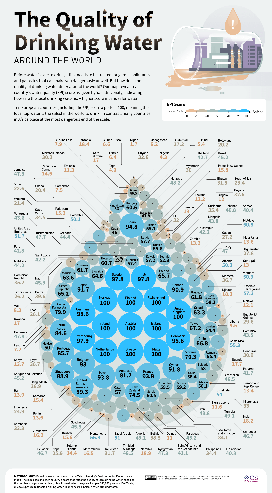
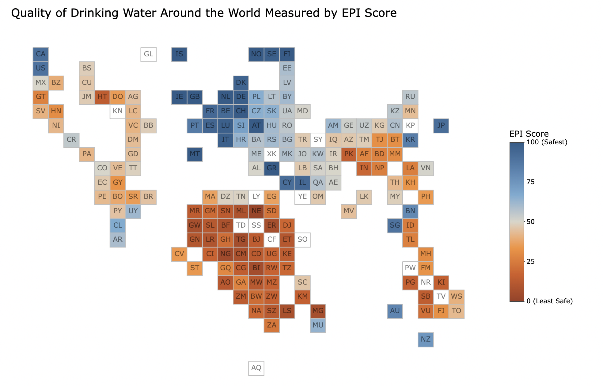

Deconstruct, Reconstruct Visualisation
The objective of this project is to bring to light the poor access to safe drinking water (a basic human right) around the world. It aims to educate people on the dire conditions in most regions of the world when it comes to getting a clean glass of water. The intended audience is the general public (primarily adults) who are interested and concerned about the worlds environmental conditions.
As part of this project I studied the below public public visualisation that showed the quality of drinking water measured in EQI around the world.

The visualisation chosen had the following three main issues:
I then created a new visualisation that addressed these concerns and represented the data well.
 Go to Project!